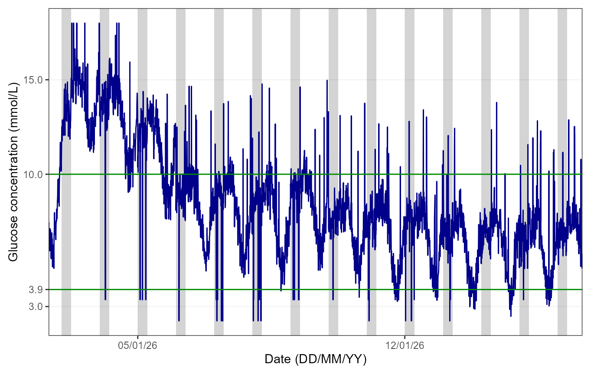
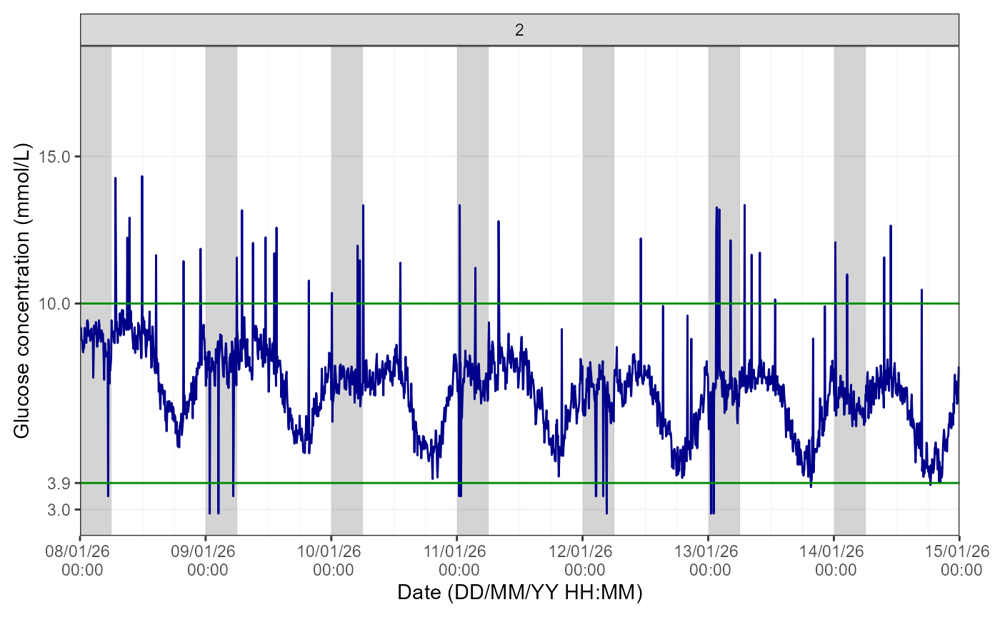
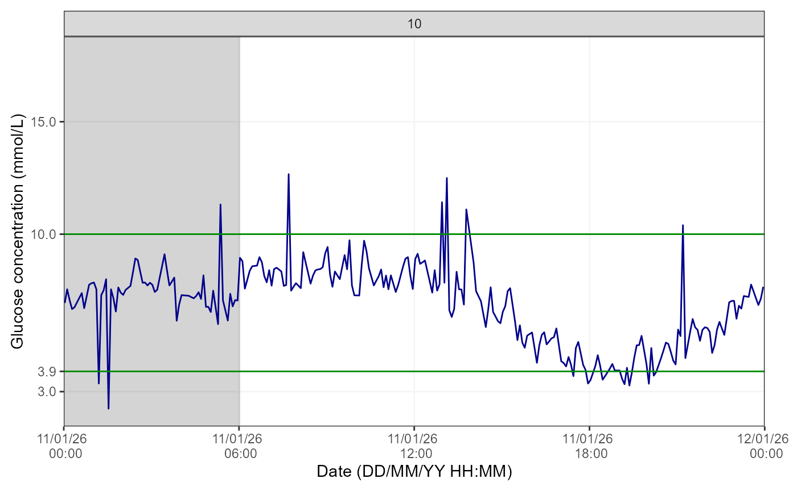

1. Introduction
The hypometrics package was developed to manipulate data
from CGM devices manufactured by Abbott, specifically the Abbott
Freestyle Libre 2 sensor and reader. Future work will involve updating
the package so it can function with data from additional CGM devices
(e.g. Dexcom).
This article describes the CGM-specific functions that were created
as part of the hypometrics package.
Setup
To be able to use the CGM functions, firstly install and load
hypometrics.
#Install
install.packages("remotes")
remotes::install_github("leicester-cdag/hypometrics")
#Load package
library(hypometrics)Simulated data
Throughout this tutorial, the examples presented will be based on the
simulated [raw_cgm] and [cgm] datasets.
These datasets include two synthetic participants, P01 and P02, with
one row per CGM timestamp. The cgm dataframe is a cleaner
version of the raw_cgm as it includes CGM data that has
been interpolated. Further information on data interpolation is provided
in the next section.
- A preview of the
raw_cgmdataframe is shown below:
utils::head(raw_cgm)
#> id cgm_timestamp glucose
#> 1 P01 2026-01-01 07:22:00 6.46
#> 2 P01 2026-01-01 07:27:00 6.00
#> 3 P01 2026-01-01 07:32:00 7.06
#> 4 P01 2026-01-01 07:37:00 7.63
#> 5 P01 2026-01-01 07:42:00 6.99
#> 6 P01 2026-01-01 07:47:00 6.812. Cleaning CGM data
From implicit to explicit gaps in CGM data
The [raw_cgm] dataset has gaps in the CGM timestamps
which are implicit. For example, as shown below, there is a gap between
18:27 and 18:42 but the missing CGM timestamps and glucose values are
not explicitly included in the dataset. This means that gaps in the data
are not particularly obvious to the user.
raw_cgm %>% dplyr::slice(120:130)
#> # A tibble: 11 × 3
#> id cgm_timestamp glucose
#> <chr> <dttm> <dbl>
#> 1 P01 2026-01-01 17:57:00 5.11
#> 2 P01 2026-01-01 18:07:00 4.98
#> 3 P01 2026-01-01 18:17:00 4.1
#> 4 P01 2026-01-01 18:22:00 4.91
#> 5 P01 2026-01-01 18:27:00 4.98
#> 6 P01 2026-01-01 18:42:00 4.87
#> 7 P01 2026-01-01 18:47:00 5.43
#> 8 P01 2026-01-01 18:52:00 5.77
#> 9 P01 2026-01-01 18:57:00 5.19
#> 10 P01 2026-01-01 19:07:00 4.54
#> 11 P01 2026-01-01 19:17:00 4.19The cgmInterpolate() function addresses this by turning
these implicit gaps into explicit gaps. In that case, it will add 18:32
and 18:37 as timestamps with the corresponding glucose values marked as
missing (i.e. NA), as shown below. The ‘Interpolate’ argument is set to
FALSE as the aim here is solely to produce explicit gaps, not to
interpolate glucose values. The ‘MinGap’ argument determines the minimum
data gap considered and it is set to 600 seconds (or 10 min) so at least
1 CGM timestamp can be added. The desired granularity of data is 5
minutes so the ‘Granularity’ argument is set to 300 seconds.
cgm_explicit_gaps <- hypometrics::cgmInterpolate(raw_cgm, Interpolate = FALSE, MinGap = 600, Granularity = 300)
cgm_explicit_gaps %>% dplyr::slice(133:140)
#> id cgm_timestamp glucose
#> 1 P01 2026-01-01 18:22:00 4.91
#> 2 P01 2026-01-01 18:27:00 4.98
#> 3 P01 2026-01-01 18:32:00 NA
#> 4 P01 2026-01-01 18:37:00 NA
#> 5 P01 2026-01-01 18:42:00 4.87
#> 6 P01 2026-01-01 18:47:00 5.43
#> 7 P01 2026-01-01 18:52:00 5.77
#> 8 P01 2026-01-01 18:57:00 5.19Interpolation of CGM data
There might be instances where, following turning implicit gaps into
explicit gaps, missing glucose values need to be interpolated. This can
be done by simply changing the ‘Interpolate’ argument of the same
function to TRUE. This will allow the linear interpolation of glucose
data using the stats::approx() function. The ‘MaxGap’
argument here becomes essential as it determines what is the maximum gap
for which glucose values should be interpolated. For example, if set at
1800 seconds (the default in the function), any glucose values in a gap
longer than 30 minutes will not be interpolated and left as NA. It is up
to the user to determine what the ‘MaxGap’ should be depending on their
analysis. Let’s see what the linear interpolation looks like below,
still based on our 18:27 to 18:42 gap example from earlier.
cgm_explicit_gaps_and_interpolation <-
hypometrics::cgmInterpolate(raw_cgm, Interpolate = TRUE, MinGap = 600, Granularity = 300, MaxGap = 1800)
cgm_explicit_gaps_and_interpolation %>% dplyr::slice(133:140)
#> id cgm_timestamp glucose
#> 1 P01 2026-01-01 18:22:00 4.91
#> 2 P01 2026-01-01 18:27:00 4.98
#> 3 P01 2026-01-01 18:32:00 4.94
#> 4 P01 2026-01-01 18:37:00 4.91
#> 5 P01 2026-01-01 18:42:00 4.87
#> 6 P01 2026-01-01 18:47:00 5.43
#> 7 P01 2026-01-01 18:52:00 5.77
#> 8 P01 2026-01-01 18:57:00 5.19We can see here that as the gap was less than 30 minutes, glucose values have been linearly interpolated. The added values are 4.91 mmol/L (at 18:37) and 4.87 mmol/L (at 18:42).
3. Checking CGM data
After cleaning the data and before diving into data analysis, the
checkMissingCGM() function enables the evaluation of
missingness in glucose data.
Sample level
Firstly, you can explore the number of hours of CGM data available per day for all participants included by running:
hypometrics::cgmCheck(cgm)
#> # A tibble: 30 × 3
#> id Date total_cgm_hours
#> <chr> <date> <dbl>
#> 1 P01 2026-01-01 16.6
#> 2 P01 2026-01-02 23.9
#> 3 P01 2026-01-03 23.9
#> 4 P01 2026-01-04 23.9
#> 5 P01 2026-01-05 23.9
#> 6 P01 2026-01-06 23.9
#> 7 P01 2026-01-07 23.9
#> 8 P01 2026-01-08 23.9
#> 9 P01 2026-01-09 23.9
#> 10 P01 2026-01-10 23.9
#> # ℹ 20 more rowsIndividual level
With the initial identification of days/participants with low CGM data coverage in the previous step, further investigation can be conducted by looking at CGM data from individual participants. For example:
missingness_P01 <- cgmCheck(cgm, CheckAll = FALSE, StudyID = "P01", AxisLabels = c(0, 2.2, 3.9, 10, 20))This creates a list which contains a data set with daily breakdown of available hours of CGM data for participant ‘P01’ and a graph highlighting periods of missingness can be produced using the code below.
graphics::plot(missingness_P01$cgm_na_distribution_plot)4. Describing CGM data
Continuous glucose monitoring data summary
Using the cgmSummarise() function, which combines the
outputs of multiple iglu package
functions, a summary of CGM data can be produced. This includes CGM data
coverage, mean/median glucose, glucose standard deviation/interquartile
range, coefficient of variation, time above, below and in range for each
participant. The default unit for glucose values is mmol/L but this can
be changed to mg/dL. The parameters for the interquartile range, time
in/above/below range can also be adapted depending on user’s needs.
cgmSummarise(DataFrame = cgm, GlucoseUnit = "mmol/L")
#> id start_date_cgm end_date_cgm nweeks ndays active_percent
#> 1 P01 2026-01-01 07:22:00 2026-01-15 07:12:00 2 14 days 100
#> 2 P02 2026-01-02 15:52:00 2026-01-16 15:47:00 2 14 days 100
#> mean_glu sd_glu median_glu Q1_glu Q3_glu cv_glu above_13.9 above_10
#> 1 8.1 2.1 7.8 6.7 9.4 26.3 0.7 18.6
#> 2 8.5 2.9 7.8 6.5 9.8 34.4 6.5 23.5
#> in_range_3.9_10 below_3.9 below_3
#> 1 80.6 0.7 0.3
#> 2 73.6 2.9 0.5Hypoglycaemia episode detection
The sdhDetection() function allows to automatically
detect and report on every episode of CGM-detected hypoglycaemia. The
function takes CGM data and returns for each participant all episodes of
hypoglycaemia that were detected: start and end time of episode,
duration, nadir and day/night status (night: 00h00-06h00). If an episode
overlaps between day and night status, it is marked as overlap. The
default hypoglycaemia detection limit is 3.9 mmol/L and duration 15
minutes.
utils::head(sdhDetection(DataFrame = cgm), n=10)
#> id sdh_number sdh_interval
#> 1 P02 1 2026-01-11 17:57:00 UTC--2026-01-11 18:42:00 UTC
#> 2 P02 2 2026-01-13 16:57:00 UTC--2026-01-13 18:47:00 UTC
#> 3 P02 3 2026-01-13 19:17:00 UTC--2026-01-13 20:27:00 UTC
#> 4 P02 4 2026-01-14 17:57:00 UTC--2026-01-14 18:22:00 UTC
#> 5 P02 5 2026-01-14 18:42:00 UTC--2026-01-14 18:57:00 UTC
#> 6 P02 6 2026-01-14 19:17:00 UTC--2026-01-14 19:52:00 UTC
#> 7 P02 7 2026-01-15 19:12:00 UTC--2026-01-15 19:52:00 UTC
#> sdh_duration_mins sdh_nadir sdh_night_status
#> 1 45 3.4 Day
#> 2 110 3.0 Day
#> 3 70 2.9 Day
#> 4 25 2.9 Day
#> 5 15 2.5 Day
#> 6 35 3.1 Day
#> 7 40 3.3 DayWe can see in the table above that P02 experienced 7 episodes of hypoglycaemia below 3.9 mmol/L of a minimum duration of 15 minutes. P01 did not experience any hypoglycaemia episodes with those characteristics.
The default parameters can be changed to explore a different glucose threshold, and minimum duration. For example:
utils::head(sdhDetection(DataFrame = cgm, DetectionLimit = 3, DetectionDuration = 10), n=10)
#> id sdh_number sdh_interval
#> 1 P01 1 2026-01-06 05:17:00 UTC--2026-01-06 05:27:00 UTC
#> 2 P02 1 2026-01-14 18:42:00 UTC--2026-01-14 18:57:00 UTC
#> sdh_duration_mins sdh_nadir sdh_night_status
#> 1 10 2.9 Night
#> 2 15 2.5 DayAfter changing the default parameters, we see that P01 experienced one episode of hypoglycaemia below 3 mmol/L for a duration of 10 minutes.
If sleep data is available, the user can also sleep information to
the output by changing the default AddSleepStatus parameter to “yes”.
For this to run, the CGM dataset used must include a sleep_status column
(this can be obtained using the cgmsleepLink() function).
For example:
linked_data <- cgmsleepLink(CgmDataFrame = cgm,
SleepDataFrame = hypometrics::raw_sleep)
utils::head(sdhDetection(DataFrame = linked_data,
AddSleepStatus = "yes"), n=10)Sensor-detected hypoglycaemia data summary
Once the list and details of all episodes of hypoglycaemia have been
produced, it might be useful to have summarised descriptive data in a
single dataset. This can be done using the sdhSummarise()
function. With one row per participant, the output includes the overall
number of hypoglycaemic episodes, the number occuring the night or day,
the mean duration of those episodes as well as details on longer
episodes of hypoglycaemia. The user can define how a long episode is
defined, using the ‘LongDuration’ argument. The default is 120 minutes.
This summary can be produced at any threshold of glucose, as it simply
takes the output of the sdhDetection() function as input.
Let’s see a summary of SDH data, for a glucose threshold of 3.9 mmol/L
(the default), using our example dataset.
## Producing the list of hypoglycaemia episodes for all participants
sdh_map <- sdhDetection(DataFrame = cgm)
## Summarising SDH data
sdhSummarise(DataFrame = sdh_map)
#> id n_sdh3.9 n_sdh3.9_day n_sdh3.9_night n_sdh3.9_overlap_daynight
#> 1 P02 7 7 0 0
#> mean_duration_sdh3.9 mean_duration_sdh3.9_day mean_duration_sdh3.9_night
#> 1 48.6 48.6 NaN
#> mean_duration_sdh3.9_overlap_daynight n_longsdh3.9 n_day_with_longsdh3.9
#> 1 NaN 0 0If sleep data is available, the parameter
AddSleepSummary can be turned to “yes” and the number of SD
when asleep, awake or when sleep information was missing for each SDH
and participant will also be calculated.
5. Visualising CGM data
It may be useful to plot CGM data to visually inspect glucose
concentrations over time. The cgmVisualise() function
allows you to do this at three different levels of granularity.
Overall
Using the default function parameters, you will obtain an overview of glucose data for the entire study period for a selected participant, as shown below:
cgmVisualise(cgm, StudyID = "P02")
The figure shows the glucose trace in blue, the 3.9-10mmol/L range is delimited by green lines. The grey area highlights the period from 00:00 to 06:00 for reference, as it is typically used when examining nocturnal hypoglycaemia.
Note: if sleep tracker data is available, the user
can plot this instead by specifying “yes” to the AddSleep
argument of the function (default is “no”) and the
DataFrame used must be one where CGM and sleep data are
linked.
Week by week
It is also possible to view glucose data on a weekly basis by
specifying a breakdown by week in the TimeBreak argument of
the function and which week is of interest using the
PageNumber argument, as shown below:
cgmVisualise(cgm, StudyID = "P01", TimeBreak = "week", PageNumber = 2)
The number at the top of the figure indicates the week selected for visualisation. Please note the function will return an error if the picked PageNumber (i.e. here, week number) is out of the data range (e.g. PageNumber = 5 when there are only 4 weeks of data).
Day by day
Lastly, for further granularity, there is an option to visualise this data for specific days using the same logic as for the weekly data.
cgmVisualise(cgm, StudyID = "P02", TimeBreak = "day", PageNumber = 10)
The number at the top of the figure indicates the day selected for visualisation. Please note the function will return an error if the picked PageNumber (i.e. here, day number) is out of the data range (e.g. PageNumber = 15 when there are only 14 days of data).